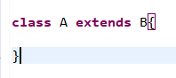
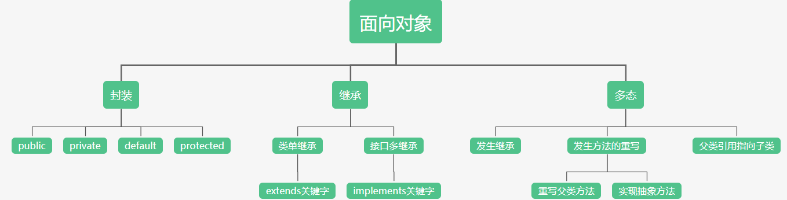

其基本思想是使用对象、类、继承、封装、多态等基本概念来进行程序设计。
面向对象三大特性：
1：继承
2：封装
3：多态
使用 extends 关键字声明。
 A继承B
规则：
子类的对象拥有父类的全部属性与方法，称作子类对父类的继承。（重点）
java中一个类只能有一个父类，一个类可以有多个子类（一人只有一个爹，一个人有几个儿子）
java中所有的类隐式继承自Object类
子类不能继承父类中访问权限为private的成员变量和方法。
子类可以重写父类的方法（方法的重写，多态中详解）
Java中通过super来实现对父类成员的访问，super用来引用当前对象的父类。
super.属性名（）；
super.方法名（）；
封装的原则是使对象以外的部分不能随意的访问和操作对象的内部属性（重点）
关键字：
|
表5-1 访问权限修饰符 |
||||
|
修饰符 |
同一个类 |
同一个包中 |
子类 |
所有类 |
|
private |
* |
|
|
|
|
default |
* |
* |
|
|
|
protected |
* |
* |
* |
|
|
public |
* |
* |
* |
* |
多态的存在要有3个必要条件：
继承
方法重写
父类引用指向子类对象。
例子：小王，小李 斧头 柴
小王（对象） 拿起斧头去 劈材（行为），一刀两断（表现）。
小李（对象） 拿起斧头去 劈材（行为），两刀不断（表现）。
继承在多态中的应用：
上面的例子当中，小王要劈材需要什么？ 斧头 柴
小李需要什么？ 也是斧头 柴
一起就需要两把斧子两堆柴
如果小王跟小李是一家人呢？
是不是只需要一把斧头一堆柴？
class 父亲{
String 斧头；
String 柴；
}
回顾继承的规则，有一条是：子类的对象拥有父类的全部属性与方法，称作子类对父类的继承。
小王 extends 父亲
小李 extends 父亲
这个时候小王和小李是不是就是 （Java中通过super来实现对父类成员的访问）
class 小王{ class 小李{
String 斧头； String 斧头；
String 柴； String 柴；
} }
世界上没有人是生而知之的，大多本身都要自己去学，但有没有例外呢？
变色龙生下来就会变色，鱼生下来就能在水中绯，鸟天生就能在空中飞。
为什么？？？
因为他们有一个好爹
哎，巧的是小王跟小李也有一个好爹！
class 父亲{
String 斧头；
String 柴；
public void pichai(){
System.out.println("把柴劈成两半！")
}
}
你说气不气，别人劈材都要学，他们两直接
小王 extends 父亲
小李 extends 父亲
根据继承规则：子类的对象拥有父类的全部属性与方法，称作子类对父类的继承。
class 小王{ class 小李{
String 斧头； String 斧头；
String 柴； String 柴；
public void pichai(){ public void pichai(){
System.out.println("把柴劈成两半！") System.out.println("把柴劈成两半！")
} }
} }
记得面向对象的核心吗？不同对象的同一行为有不同表现。
这他俩不都一样一样的嘛？
这个时候就要提到 重写 这个词了，字面意思，重新写过！
重写：
如果在子类中的方法与其父类有相同的的方法名、返回类型和参数表，我们说该方法被重写 (Overriding)。
要求是什么？ 相同的的方法名
返回类型
参数表
class 小王{ class 小李{
String 斧头； String 斧头；
String 柴； String 柴；
public void pichai(){ public void pichai(){
System.out.println("强壮的小王，一刀两断！") System.out.println("弱鸡小李，两刀不断！")
} }
} }
有毛病没？ 相同的的方法名 pichai 返回类型都是 void 参数表都是（）
是不是老铁没毛病？
那不同的地方在哪里？
class 父亲{
String 斧头；
String 柴；
public void pichai(){ 小王 小李
System.out.println("把柴劈成两半！") System.out.println("强壮的小王，一刀两断！") System.out.println("弱鸡小李，两刀不断！")
}
}
是不是表现不同了？核心是什么？？不同对象的同一行为有不同表现！多态实现有咩有？？
要是在来一个阿毛阿狗劈柴呢？是不是只要重复上面就行了？
所以继承的作用是什么？
1：减速重复代码，提高代码的复用. 不需要为每个子类定义pichai()，只需要super.pichai()就能搞定。
2：对事物的建模 不需要为每个子类定义斧头，柴，直接super.柴就能搞定。
还记得多态的第三个条件吗，父类引用指向子类对象。
看代码：
class A{
public void duotai(父亲 fuqin){
fuqing.pichai();
}
}
这个方法要求使用时传一个 父亲 类型的参数进去
public void man(String [] agrs){
A a = new A();
父亲 fuqin = new 父亲();
a.duotai(fuqin);
}
最后输出 "把柴劈成两半"
这里就要提到一个知识了,里氏替换原则：
子类对象可以代替父类对象
什么意思呢？就是说方法要去传一个 父亲 进去，因为小王、小李是 父亲 的子类，所以我可以传一个小王或者小李进去
public void man(String [] agrs){
A a = new A();
小王 xiaowang = new 小王(); 或者 父亲 fuqin = new 小王();
a.duotai(xiaowang); a.duotai(fuqin);
}
这个时候 a.duotai当中调用的pichai()方法，实际上是调用的小王.pichai()
最后输出 "强壮的小王，一刀两断！"
要是传入小李呢？是不是输出的是 "弱鸡小李，两刀不断！"
传入阿毛阿狗呢？是不是又不一样了？核心是什么？不同对象的同一行为有不同表现！
是不是根据传入的对象不同，最后的表现也不一样？多态有咩有？？
最后来讲一讲封装：
定义：封装的原则是使对象以外的部分不能随意的访问和操作对象的内部属性
假设父亲有一把电锯，是不是等于小王和小李也有了？
可是父亲想锻炼他们，不想给他们用，怎么办？藏起来呗！
private String 电锯
private 表示私有，只有自己类能访问，这样小王和小李就不能使用super.电锯了。
可是封装的定义是什么？不能随意的访问，而不是不能访问
封装的使用：
class 父亲{
public String get电锯() {
if（年龄大于18岁）{
return 电锯;
}
}
public void set电锯(String 电锯) {
this.电锯 = 电锯;
}
}
增加了两个方法 get电锯()、Set电锯(),因为使用的是public所以可以使用super.get电锯（） 会发生什么？
是不是只要年龄大于18岁就能得到电锯电锯了。
所以封装的作用是什么？
封装是对 private default protected public几个关键字的使用。使对象以外的部分不能随意的访问和操作对象的内部属性。
